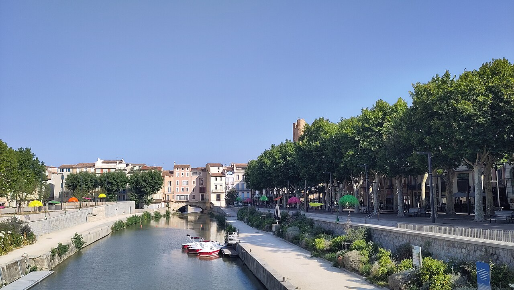
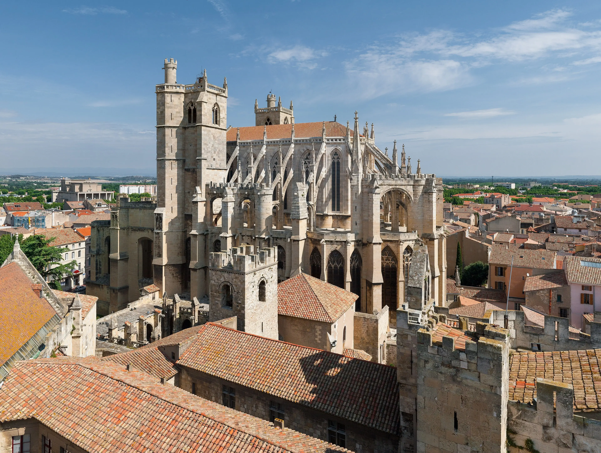

De mooiste plekken in Narbonne
Een rondleiding langs de hoogtepunten van deze prachtige mediterrane stad, van de gotische kathedraal tot het Canal de la Robine.
Lees meer
Een mediterrane stad vol geschiedenis, smaak en zon — aan de oevers van het Canal de la Robine
Narbonne is een charmante stad met meer dan 2.000 jaar geschiedenis, gelegen aan het UNESCO-beschermde Canal de la Robine. Op 15 minuten van de Middellandse Zee, omringd door de wijngebieden Corbières en Minervois.
De gotische kathedraal, Palais des Archevêques, Canal de la Robine en de Via Domitia.
Ontdek meerVan boutique-hotels in de binnenstad tot resorts aan het strand van Narbonne-Plage.
Bekijk hotelsCampings vlakbij het strand of midden in de natuur van de Corbières-heuvels.
Bekijk campingsMediterraan klimaat met meer dan 300 zonnige dagen per jaar. Wanneer ga jij?
Bekijk klimaatMediterrane keuken, verse zeevruchten en lokale wijnen uit de Corbières en Fitou.
Bekijk restaurantsVerken de omgeving: Carcassonne, Gruissan, de Pyreneeën en de wijnroutes.
Auto huren
Een rondleiding langs de hoogtepunten van deze prachtige mediterrane stad, van de gotische kathedraal tot het Canal de la Robine.
Lees meer